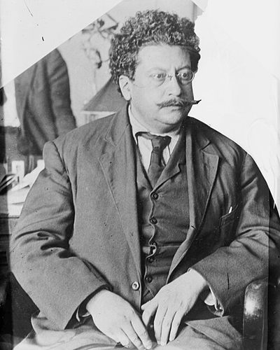

Ideologies / Anarchist
What is Magonism?
Magonism is a political ideology in the Anarchist family. Issued from exile in Los Angeles during the Mexican Revolution. The manifesto declares private property the root of the whole social order and calls on the people not to wait for any new government but to expropriate at once: land, houses, machinery and transport are to be taken and held for common use by those who work them. It names capital, authority and the church as the three enemies, and treats the armed rising then under way as the moment to act.
Land and Liberty!
Defined from: Ricardo Flores Magón and the Organising Junta of the Mexican Liberal Party, Manifesto of 23 September 1911 (1911)
See how close you are to Magonism Dare a friend to answer as one


Where Magonism stands on 13 axes
Each axis runs from 0 to 100. A score of 50 is the middle. On a classic compass it sits in the Libertarian Left quadrant.
| Axis | Position | Score | In words |
|---|---|---|---|
| EconomyMarket to Planned | 65 | Leans Planned | |
| OwnershipPrivate to Collective | 100 | Very strongly Collective | |
| RightsLiberty to Security | 0 | Very strongly Liberty | |
| GovernmentDemocracy to Autocracy | 0 | Very strongly Democracy | |
| StructureDecentralised to Centralised | 5 | Very strongly Decentralised | |
| NationInternationalist to Nationalist | 10 | Very strongly Internationalist | |
| ImmigrationMulticulturalist to Assimilationist | 25 | Strongly Multiculturalist | |
| ValuesProgressive to Traditional | 20 | Strongly Progressive | |
| TechnologyAccelerationist to Precautionary | 45 | Balanced | |
| EnvironmentIndustrialist to Environmentalist | 60 | Leans Environmentalist | |
| ReligionSecular to Religious | 0 | Very strongly Secular | |
| MilitaryPacifist to Militarist | 70 | Strongly Militarist | |
| TradeFree Trade to Protectionist | 40 | Leans Free Trade |
Ideologies closest to Magonism
- Collectivist Anarchism91% alike
- Insurrectionary Anarchism91% alike
- Communization Theory90% alike
- Black Anarchism88% alike
- Platformism88% alike
Its opposite on this map is Kokutai Thought, at 16%.
Parties near Magonism
Mexican Liberal Party (Mexico) was the first party or movement to carry it, placed here from Programme of the Mexican Liberal Party (1906).
- Dielo Truda GroupFrance. Organisational Platform of the General Union of Anarchists (1926)87% alike
- Anti Authoritarian InternationalSwitzerland. Resolutions of the Saint Imier Congress (1872)86% alike
- General Confederation of Labour of 1906France. The Charter of Amiens (1906)80% alike
- Democratic Union PartySyria. Charter of the Social Contract (2014)80% alike
Common questions
What is Magonism?
Magonism is a political ideology in the Anarchist family. Issued from exile in Los Angeles during the Mexican Revolution. The manifesto declares private property the root of the whole social order and calls on the people not to wait for any new government but to expropriate at once: land, houses, machinery and transport are to be taken and held for common use by those who work them. It names capital, authority and the church as the three enemies, and treats the armed rising then under way as the moment to act.
What does Magonism believe?
In one line: Land and Liberty! Its strongest positions are Collective, Liberty, Democracy. Issued from exile in Los Angeles during the Mexican Revolution. The manifesto declares private property the root of the whole social order and calls on the people not to wait for any new government but to expropriate at once: land, houses, machinery and transport are to be taken and held for common use by those who work them. It names capital, authority and the church as the three enemies, and treats the armed rising then under way as the moment to act.
Who founded Magonism?
Magonism is defined here from Manifesto of 23 September 1911 (1911) by Ricardo Flores Magón and the Organising Junta of the Mexican Liberal Party. The thinker most tied to it is Ricardo Flores Magón (1874 to 1922).
Is Magonism left wing or right wing?
On a classic two axis compass Magonism falls in the Libertarian Left quadrant, which means the economic left and the libertarian side. Left and right hide a lot, though, which is why EthosScales scores it on thirteen separate axes.
How is Magonism different from Collectivist Anarchism?
They are close: 91% alike. The biggest gaps are on Environment, where Magonism scores 60 and Collectivist Anarchism scores 45, and Military, where Magonism scores 70 and Collectivist Anarchism scores 55. On each axis, 0 is one end and 100 is the other.
Think this is wrong? Suggest a correction. The scores are editorial estimates.